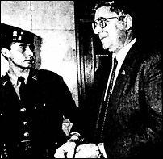

CHAPTER
FIVE
After Hubbard
Scientology is here to rescue you.
- L. RON HUBBARD
Hubbard's last will and testament, dated the day
before his death, held no surprises. He left an unspecified amount of money, the bulk of
his fortune, to the "Author's Trust Fund B." Norman Starkey, a founding Sea Org
member, became Hubbard's executor. He had been president of Author Services Inc., which
marketed Hubbard's published works, since January 1983.
Hubbard disinherited his oldest son, Nibs, and his
daughter by Sara, Alexis. Both were later paid settlements, Nibs having threatened
litigation. To Scientologists Hubbard bequeathed only "my love and continued support,
and my hopes for a better world." Secret provisions were made for his wife, Mary Sue,
whom he had chosen not to see for the last six years of his life, and for her three
surviving children. Provision was also made for Nibs' sister, Catherine.
In July 1986, a Los Angeles jury awarded $30 million
in damages to ex-Scientologist Larry Wollersheim, who claimed that the Church had
jeopardized his mental health and deliberately ruined his business. The jury also ruled
that the Church must pay $45 million into the Court before they would be allowed to
appeal. In July 1989, the California Court of Appeal upheld a ruling in Wollersheim's
favor, repeating the earlier court's statement that he had been subjected to the Fair Game
Law by the Church of Scientology. However, the award was adjusted to $2.5 million.
In a surprise move in December 1986, the Church
settled every case brought against them through Boston attorney Michael Flynn. They also
settled out of court with former Mission Holder Martin Samuels, and with Julie
Christofferson-Tichboume. In a secret agreement, the plaintiffs agreed not to make any
further public statements about Scientology, nor to disclose the amount of their
settlements. When the document finally leaked out, it contained an interesting clause,
saying that the amounts paid in settlement depended in part upon the" length and
degree of harassment" each plaintiff had received. The payments amounted to almost $4
million, with Armstrong taking $800,000, and Flynn $1,075,000. For that price the
Scientologists bought the silence of their most significant opponents. With the Armstrong
settlement, the Hubbard archives material which had been held under seal was returned to
the Scientologists. The contents of the Affirmations, the Blood Ritual, and Hubbard's
letters to his three wives may never be published; but there is enough historical evidence
now in the public record to show Hubbard for what he was. If a piece is broken from a
hologram the entire image remains in the fragment. Hubbard too is implicit in every detail
of his life, even in some of his most public utterances.
Michael Flynn fought against the Church for seven
years. In doing so he spent a great deal of his own money, put his career in jeopardy,
faced an unceasing barrage of invective and libel, and had to defend (and managed to win)
some fourteen legal complaints brought against him by the Church. He gave succour to many
ex-Scientologists.
When Flynn settled, he gave all of his Scientology
files (apart from client material) to the Church. But he had tried to ensure that the good
fight would continue.
Throughout 1986, a group of over 400 former
Scientologists gathered to create a Class Action against the Church. They called
themselves Freedom for All In Religion, or FAIR. Michael Flynn was closely involved in the
initial preparation of their Complaint.
On the last day of 1986, a few weeks after Flynn
announced his withdrawal from the fight, the FAIR suit was filed in Los Angeles. It was
filed not only against the Church of Scientology, but against its leading executives.
There were three causes in the Complaint:
a. Fraudulent representations have been made by
defendants concerning their tax-exempt status and charitable nature, concerning the manner
in which monies were obtained and received by L. Ron Hubbard and defendants named herein,
concerning the confidentiality of defendants' auditing files, and concerning L. Ron
Hubbard's background, achievements and character;
b. There has been a breach of fiduciary duty
[breach of trust] to all the members of the class;
c. Plaintiffs seek equitable relief and request
that a constructive trust be imposed on all pertinent assets of defendants.
A constructive trust would place the Preclear, Ethics
and B-1 files of the members of FAIR into the hands of the Court until the case is
settled. The suit was filed by a group of six ex-members, and demanded a billion dollars
in relief. At the time of writing, after five amended Complaints, FAIR have failed to have
a Complaint accepted for trial.
In April 1988, the former Inspector General of the
Religious Technology Center filed a suit against various Scientology Organizations.
Vicki Aznaran was an executive during the schism,
rising to become David Miscavige's immediate junior. She and her husband, Richard, left
the Sea Organization in April 1987. The Aznarans' Complaint criticized the Team Member
Share System operated at CMO headquarters, described as:
privately issued money in exchange for food,
board, pay, bonuses and liberty. The Team Member System required that the Plaintiffs be
given one of each of these cards when the Church administration was satisfied with their
work production, and loyalty to the organization. Any dissatisfaction with the work output
or 'attitude' of Plaintiffs would result in revocation of the tokens, thereby requiring
Plaintiffs to work long hours with no days off, no pay, no board (requiring them to sleep
outdoors on the ground [called 'pig berthing' in the Church issue]) and substandard
nutrition comprised solely of rice, beans and water. When Plaintiffs had lost all of their
cards, as a matter of course, they would be sent to the Rehabilitation Project Force for
'attitude adjustment,' which was comprised of even harsher labor, deprivation of liberty,
and psychological duress forcing the submission of Plaintiffs to the power and control of
Defendants.
The Aznarans had no reservations about the true intent
of Church management, and described their treatment as "brainwashing," and their
condition as "slave-like." Further, they asserted that the Scientologists had:
employed the following psychological devices...
to cause Plaintiffs to involuntarily abandon their identities, spouses and loyalties, and
deprive Plaintiffs of their independent free will .... Threats of torture; implementation
of brainwashing tactics; threats of physical harm for lack of loyalty... lengthy
interrogations... sudden involuntary and forceable separation of spouses from one another
for many months, and depriving the spouses of communication with one another or allowing
them to know where the other was located; willfully and expressly inducing divorce between
Plaintiffs . . . deliberately inducing fatigue by physical abuse and deprivation of sleep;
forcing Plaintiffs to be housed in animal quarters; deliberately confining Plaintiffs to
premises under the control of Defendants and under threat of physical harm without
allowing Plaintiffs to leave of their own free will; and threatening Plaintiffs that
failure to submit to the power and control of Defendants would result in their becoming
'fair game.'
Vicki was sent on "mission" to Los Angeles
in 1981 "to purge members of Defendants' organization... remove assets of Defendant
Church of Scientology of California to overseas trusts where they could not be accessed by
plaintiffs or the government, and set up sham corporate structures to evade prosecution
generally. Richard was sent with Vicki in the capacity of a security investigator who
surveilled members of the organizations associated with Defendants for the purposes of
determining their loyalty and likelihood that they would testify against Defendants in
pending civil and criminal suits, as well as designated 'enemies' of the Church."
In December 1981, Vicki Aznaran was assigned to Author
Services Inc., a for-profit corporation using Sea Org personnel. She was
"commissioned to reorganize corporate structures and effect sham sales of millions of
copies of Dianetics to the corporate Defendants named herein as a vehicle for
transferring assets among them."
In Spring 1982, Miscavige deprived Richard Aznaran of
all his Team Member shares, and sent him to the Rehabilitation Project Force (RPF) in Los
Angeles. His pay was reduced to $1.25 per week, and he spent ninety-nine days on the RPF.
Meanwhile, Vicki worked directly for Hubbard's deputy, Ann Broeker. Meetings between Vicki
and Richard were prohibited, so they met surreptitiously.
The Aznarans allege that the intention in October 1982
(the time of the San Francisco Mission Holders' Conference) was "for all Scientology
entities to turn over their profits to . . . Author Services, Inc." When Vicki
expressed disapproval of this, she was ordered to the RPF in Hemet where, "for
approximately 120 days, [she] was forced to participate in the 'running program.' The
running program required Vicki and other persons subjected to the control of Defendants to
run around an orange telephone pole from 7:00 a.m. to 9:30 p.m .... with ten minute rests
every one-half hour, and thirty minute breaks for lunch and dinner."
In about May 1983, Vicki was "deemed
rehabilitated" and ordered back to the Religious Technology Center at Gilman. Until
Hubbard's death, the Aznarans remained at Gilman, when Richard was ordered to Hubbard's
ranch at Creston working there as a security guard for a year and a half: "Richard
was forced to falsify time cards to falsely indicate that he had been working forty hour
work weeks, so as to avoid an obligation on the part of Defendants from paying him
overtime ....
Richard was forced to sleep in a horse stable with
several . . . other indoctrinated employees. During the course of Richard's stay at the
ranch, Vicki was not told of his whereabouts, nor were Plaintiffs permitted to correspond
with each other."
Most important for the future of Scientology, the
Aznarans claim that "in or about February of 1987, a schism arose between Defendant
Miscavige and the Broekers, each of whom claimed to possess the 'upper level Holy
Scriptures' written by Hubbard."
Miscavige allegedly saw Vicki's demands for contact
with her husband as an "expression of allegiance" to the Broekers. Miscavige
ordered Vicki to the RPF at "Happy Valley," a "secret location bordering
the Sobova Indian Reservation near Gilman . . . overseen and controlled by Defendant
Norman Starkey."
Vicki was "not allowed to go anywhere or do
anything without her guard being present. At night she was imprisoned by having heavy
furniture moved to secure the exit .... Defendants kept, and continue to keep all of her
physical belongings including a horse and two dogs."
Vicki claimed she "had seen in the past other
victims of Happy Valley be beaten upon attempted escape, and their personal belongings
destroyed .... Vicki and others were made to wear rags taken out of garbage cans, sleep on
the ground, dig ditches."
Finally, on about April 9, 1987, "Vicki and two
other victims escaped from Happy Valley onto the Sobova Indian Reservation where they were
pursued on motorcycles by guards." They were rescued by the Indians.
Richard Aznaran meanwhile was urged to divorce his
wife. Instead, that very month they left the Sea Org, though not the Church, and returned
to Dallas, Texas, where they started a private investigation business.
The Aznarans received a "Freeloader Bill,"
for Scientology services they had received while in the Sea Org, amounting to $59,048.02.
They say that they did not seek legal assistance until January 1, 1988, because "As a
result of the psychological trauma of indoctrination techniques applied by Defendants . .
. Plaintiffs were unable to comprehend their legal rights with regard to the actions of
Defendants."
Fraud is among their charges: "Defendants ...
knew that the practices of the so-called Church of Scientology . . . were not designed to
increase the well being of any of its victims, but where [sic] made to coercively persuade
each and every follower to dedicate their lives to Defendants in order for Defendants to
increase their wealth derived from an overall scheme to make money founded on the
exploitation of free labor .... Defendants . . . required Plaintiffs to participate in
crimes against the United States Government, including the obstruction of justice and
efforts to create corporate structures designed to keep payments from properly being paid
to the Internal Revenue Service .... Plaintiffs were subjected to humiliation,
degradation, physical labor, and imprisonment, all designed to break down their will and
free thinking, and convert them into submissive, frightened and dedicated followers of
Defendants."
The Aznarans also charge Breach of Contract:
"Defendants . . . breached the said agreements [i.e. the provisions of the staff
contract] by not providing any spiritual or psychological services, but rather, providing
indoctrination, psychological coercion, duress and stress, all designed to break
Plaintiffs' will so that they would remain compliant servants to Defendants for the
remainder of their lives, and to the use of Defendants in furtherance of illegal conduct
and money making schemes."
Invasion of Privacy is a further charge:
"Plaintiffs were forced to participate in 'counselling sessions' in which they were
forced to reveal that [sic] their innermost private thoughts and feelings."
It was, of course, represented that these would be held in confidence, but "In April,
1987... Defendants... read the private file of Plaintiff Vicki J. Aznaran .... Defendants
. . . demanded that Vicki then publicly disclose and give further details concerning
further events they had learned from said file concerning various other victims of
Defendants. Vicki was advised, warned and threatened that if she did not give further
details, Defendants, and each of them, would 'get it out of you one way or another.'"
The Complaint is a devastating indictment of the
methods and motives of the current Scientology leadership.
In the month the Aznarans filed their Complaint, April
1988, the truth of their allegations about a rift at the top of Scientology were
confirmed. David Miscavige, by this time both a captain in the Sea Org and the head of the
Religious Technology Center, issued a Flag Order making the issue clear. He asserted that
the Broekers had forged Hubbard's last published Order, promoting themselves to the
command of the Sea Org as "Loyal Officers."
Miscavige cancelled the new rank, saying that Pat
Broeker had simply been part of Hubbard's domestic staff. The Broekers were "under
standard justice handling" and were "being dealt with appropriately."
However while canceling the supposed forgery, Miscavige made no mention of the rank given
to Hubbard in it, so Hubbard remained an admiral, promoted, so it would seem, by a member
of his domestic staff.
In June 1988, the Scientologists' new ship, the Freewinds,
took her maiden voyage, with the first public OT8 students aboard. The Freewinds
is a 440-foot cruise liner capable of carrying 450 passengers, and is based in Curaçao,
in the Caribbean. As yet there is no indication that the Scientologists will return to
their earlier shipboard practices.
At the end of June, the Scientologists filed a
Complaint against their former attorney, Joseph Yanny, accusing him of
"treachery," and saying he had "joined forces with confederates to
mastermind and prosecute an action." The preamble to the Complaint says "what
follows is a chronicle of betrayal, deception, and conspiracy practiced by members of the
bar as a vendetta against a former client, and callous disregard of fiduciary and ethical
obligations." Yanny responded with a declaration alleging that he had left the
services of the Church because he was asked to participate in an attempt to blackmail an
attorney hostile to the Church.
At the same time, an investigating magistrate in Milan
started making arrests. By September 1988, seventy-six Scientologists had been committed
for trial charged with offenses ranging from fraud to medical malpractice, and taking in
criminal conspiracy to extort money and unlawful detention. The Scientology drug
rehabilitation group, Narconon, came in for particularly stringent criticism:
"Extravagant therapies were applied which yielded no practical results other than
extracting huge sums of money from the families of young people who wanted to get out of
the heroin trap."
 In November, Spanish police raided
Scientology organizations (including Narconons) in Madrid, Barcelona, Valencia, Alicante,
Seville, Jerez, Bilbao, Burgos and Ondaroa. Sixty-nine people were arrested, including the
President of the Church of Scientology International, Heber Jentzsch (right).
Eleven were eventually detained. The arrests followed a nine-month investigation headed by
Judge Honrubia, who described Scientology as "a multinational organization whose sole
aim is making quick money under the guise of doing good." The judge concurred with
the Italian opinion of Narconon, saying that their establishments were dirty, run by
untrained staff and were actually little more than recruitment centers for Scientology. A
Scientology spokesman muttered about Spain's "fascist past," and Jentzsch
accused Spain of a return to the Inquisition. He and two other nonresidents were bailed
for a million dollars the next month, pending trial.
FOOTNOTES
Sources: FAIR
Complaint in California Superior Court, Los Angeles County, no. CA 001012; Aznaran
Complaint in District Court, Central District, California, no. CV 88-1786-WDK; "Flag
Order 3879 Cancelled," 18 April 1988; RTC et al. vs. Yanny et al., in California
Superior Court, L.A. County, no. C690211. |